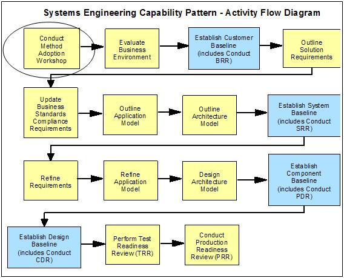
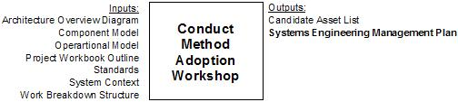

1 Description
Just as the MAW is used to tailor the Systems Engineering Management Plan (SEMP) to the needs of a particular project,
the use of PEMM themes and activities within a given project must also be adapted to project scope and organization
factors. Additionally, while it is desirable to align PEMM themes and activities with the SE&A baselines, it should
be noted that many PE activities go beyond the scope of the SE&A team’s direct responsibilities. For these reasons,
it is helpful to manage the PE effort as a subproject in its own right, to be initiated by means of a PE project
definition workshop (PE PDW).
Since the capability pattern is fairly comprehensive and since the project at hand may only call for a subset of the
phases or activities to be performed by the SE&A team, this allows the team to build a work breakdown structure
(WBS) for the in-scope activities.
Figure 1 - Method Adoption Workshop in the SE Capability Pattern

The following diagram gives a closer look at the Method Adoption Workshop (MAW).

2 Usage Context
This technique paper should be used as guidance on how to initiate the PE subproject by the use of a project definition
workshop (PDW).
3 Content
PE Project Definition Workshop (PE PDW)
The objective of the PE PDW is the formation of an extended Performance Engineering team with an agreed-to
approach for managing performance risk throughout the life of the project. This particular meeting is not
intended to capture performance requirements or to develop a detailed performance engineering plan, since those
will be developed later. However, an effective PE PDW will provide much of the information that the PE team will
need to develop a suitable performance engineering strategy.
The PE PDW is organized as follows:
-
Invitees – Representatives of the teams who will be responsible for defining, building and delivering a
well-performing solution, including
-
Project sponsor and/or customer representative
-
Lead performance engineer and performance staff
-
Lead systems engineer or SE representative(s)
-
Business process / requirements subject matter expert (SME)
-
Architecture / design SME
-
Development SME
-
Test SME
-
Deployment and/or Operations SME
-
Preparation – Meeting invitees are expected to prepare by reading this technique paper or similar
orientation materials so that they understand what is to be achieved by the overall PE effort and by the PE PDW
meeting in particular. Each invitee will have specific contributions to the meeting agenda.
-
Agenda – The PE PDW meeting agenda will be as follows:
-
Members of the lead performance engineer’s staff will handle meeting arrangements, take minutes and
moderate the meeting.
-
At the beginning of the meeting after introductions, the project sponsor or customer representative
will kick off the meeting by describing the project from a business perspective, and explain how the
business is positively affected by a well performing solution and/or how the business is negatively
affected by a poorly performing solution. (The sponsor may leave after the kick-off if they so choose.)
-
The lead performance engineer will explain the role of performance engineering in this project and what
is to be accomplished in the remainder of the workshop, and address general questions from the rest of
the audience.
-
The lead systems engineer present will discuss the development and SE&A phases and activities that
were selected for this project during the method adoption workshop (MAW) and the project schedule, to
the extent that it is known at this point. If the role of systems engineering is not generally
understood by the other attendees, a brief explanation may be offered prior to this.
-
Each of the remaining SMEs will present on
-
Their area’s role in the project
-
The key management and technical contacts from their area who will have a role in delivering a
well-performing solution, including those who should be contributing to the development of the
overall performance engineering strategy and plan
-
Their area’s “business as usual” process view of
-
How they would receive and validate their understanding of the performance requirements
-
How they would gather the volumetric assumptions underlying the performance
requirements
-
How they would contribute to the development of a well-performing solution
-
How they would measure, estimate and/or monitor solution performance during their phase
of the project
-
How they would typically address performance risk, issues, problems or concerns as they
arose
-
How they would determine that performance requirements had been satisfied before
exiting their “phase” of the project
-
What they view as their critical dependencies for delivering a well-performing
solution
-
Any reasons why their “business as usual” process may not be adequate for this particular
project situation
-
The lead performance engineer will lead a discussion on each of the PEMM “themes” which may apply to
the project (Risk and Performance Management, Requirements and Early Design, Volumetrics, Technology
Research, Design/Development/Tracking, Performance Testing & Validation, Performance Estimation
& Modeling, Live Monitoring and Capacity Management). For each of the themes, the meeting
participants should discuss:
-
Which people and/or areas should contribute to this theme
-
What facilities, tools or processes are available to help this theme (or denote as “BAU” if
this has already been covered)
-
Which SE&A baselines will be affected by these themes, and what should be done at baseline
review time to ensure that this theme is being used effectively to address performance
risk.
Note: The lead performance engineer may choose to develop a set of slides which show the
“typical” mappings of areas, facilities, tools, processes, and SE&A baselines to the PEMM
themes to expedite this part of the discussion.
-
The lead performance engineer will ask if there are any other considerations with respect to
performance that were not covered elsewhere in the meeting, so that these items should be captured as
well.
-
The meeting will be adjourned, and the performance engineering will compile the information captured
during the meeting and publish the meeting minutes.
-
Outputs –
-
Opening presentations given by sponsor, lead SE, lead PE and area SMEs
-
Summary of PEMM theme discussions and other information captured during the meeting
-
Meeting minutes
|